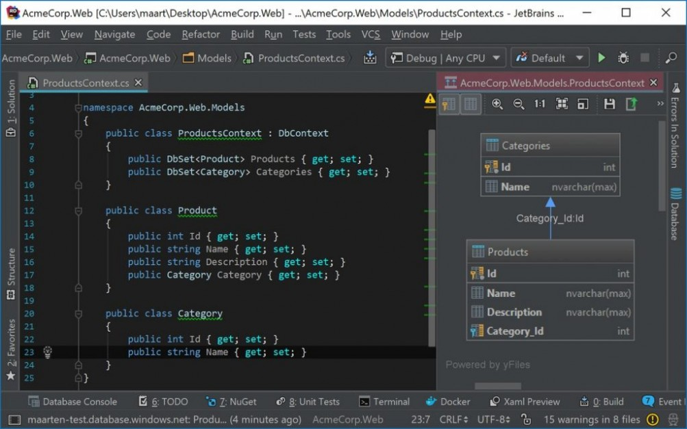
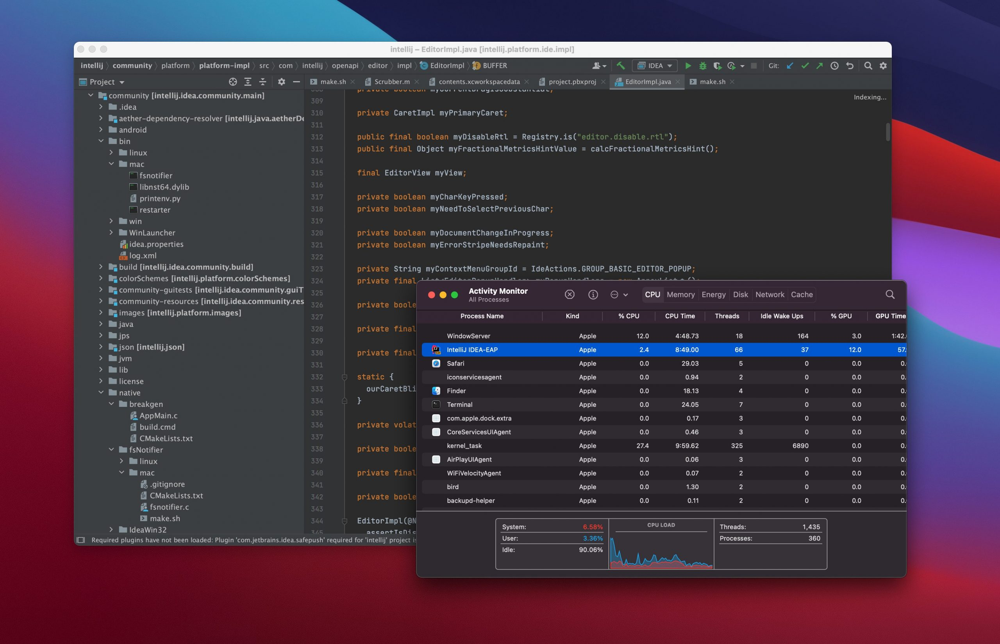
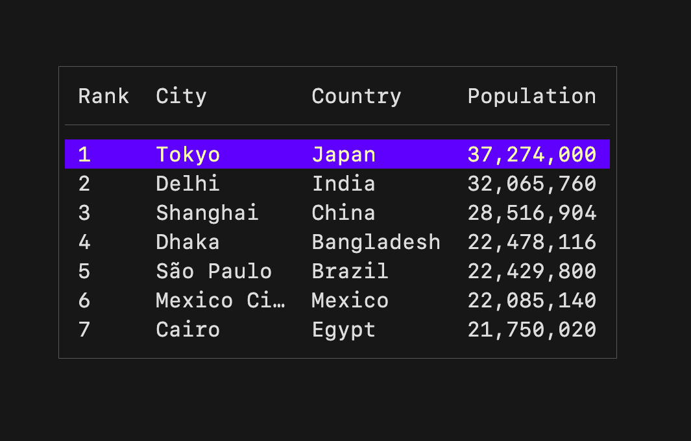

He encontrado un nuevo framework para interfaces gráficas usando C# y .NET. Se llama Avalonia y sirve como un remplazo de UWP usando axaml, una versión modificada de xaml que se usa para el diseño de aplicaciones para Windows. Tiene plugins para diferentes IDE's como Visual Studio y Jetbrains Rider. Hay uno para Visual Studio Code pero solo es un visor en vivo, por lo que no permite edición gráfica.
21-Feb-2024
20-Feb-2024
Jetbrains Rider es un IDE para C# y .NET. Sirve principalmente como remplazo a Visual Studio. Es multiplataforma con soporte para Windows, macOS o Linux. En este último tiene un paquete oficial en el repositorio Flathub para todas las distribuciones que soporten Flatpak. La compañia tiene diferentes IDE's para diferentes lenguajes.

Otro que se usa mucho es Jetbrains IntelluJ Idea. Este fue pionero en los IDE's de Java y es la base del actual Android Studio. Tiene una variedad de plugins para modificar la experiencia de programación.

19-Feb-2024
Hay una framework llamado Charm.sh, útil para interfaces gráficas para terminal. ¿Pero por qué necesitariamos una interfaz gráfica con terminal? Claro que se pueden hacer con algo más tradicional pero deberiamos aprender a amar las TUI (Terminal UI) por su versatilidad. Muchas veces no se requiere de una aplicación pesada solo para algo sencillo, como una lista de tareas. Además, estas aplicaciones pueden ser accedidas por ssh.

Usa el lenguaje Go, lo cual lo hace sencillo de usar, además de que se pueden usar todos los plugins que éste tiene. Personalmente creo que debería ser más popular.

Noticias
- OMG! Ubuntu Nautilus tendrá soporte para Onedrive.
- OMG! Ubuntu Lanzamiento de Ubuntu Core se pospone.
- OMG! Ubuntu Ubuntu 22.04 planea cambiar Thunderbird a un snap.
- 404 media Reddit: 'Estamos en las etapas tempranas de monetizar a nuestros usuarios.'
- 404 media Detrás del blog: El legado de Vice y la idea de que el internet es para siempre.
- 404 media Autores de novelas románticas molestos por el workshop 'From Meet-Bot to AI-Do'
- Hipertextual Windows 11 prueba tecnología para actualizaciones sin reinicio
- Hipertextual Inteligencia artificial para recrear personas muertas: ¿idea fantástica o error catastrófico?
- Hipertextual Menores de edad “venden” sus datos biométricos a Worldcoin a cambio de cripto. ¿Deberíamos preocuparnos?
- 9to5 Mac iOS 17.4 agrega notificación para descargas desde la App Store
- 9to5 Mac Belkin lanza el primer soporte para iPhone con seguimiento automático compatible con Apple DockKit y mucho más
- 9to5 Mac ¿Cuándo lanzará Apple iOS 17.4?